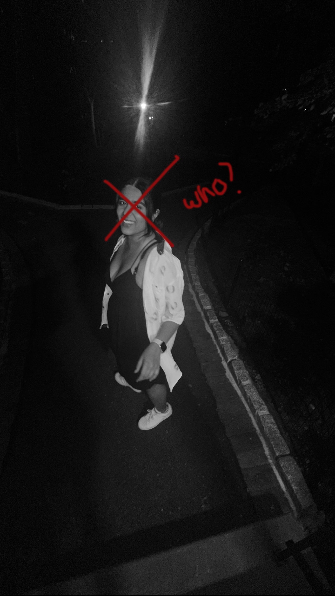
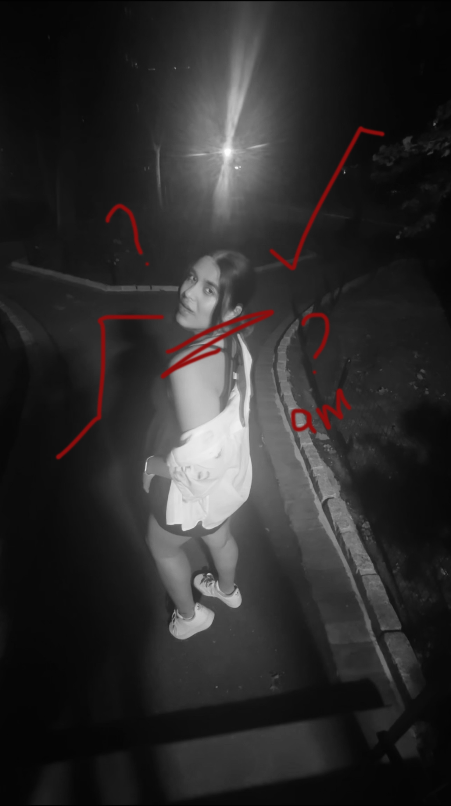
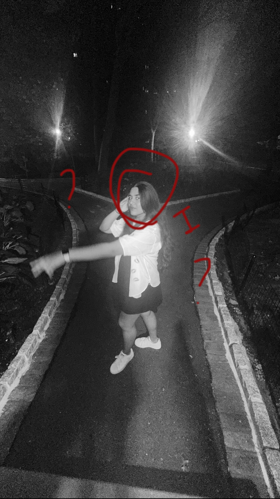
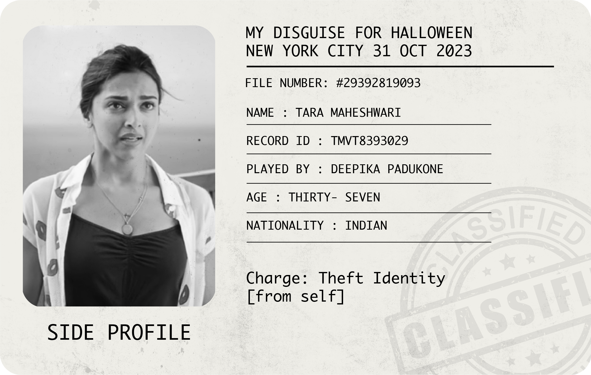
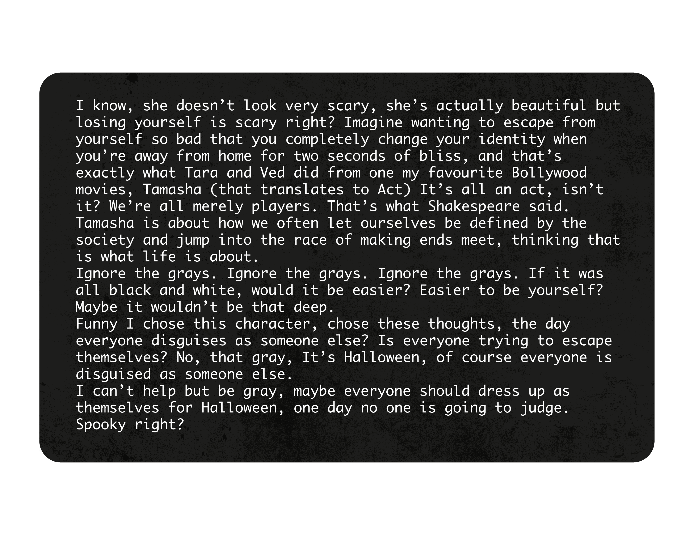

11/06/2023 What does seeing things in black and white mean? Sometimes I wonder why I get so attached to people. Okay, but that's okay, they're people, they're friends. Conversations that heal my day and Laughs that make my stomach hurt but I think it gets fucked up when I start attaching people to places and objects. I'm that person who keeps reciepts from dinners, I'm that person who keeps bottle caps from parties, snooker chalk, birthday cards, flowers between notebooks, candy wrappers, entry bands, friendship bracelets, I can go on and on, yes I have drawers filled with these objects that attach me to people I talk to and don't anymore...
I'm also that person who has 46,018 excluding videos of my friends, of memories I want to live again, feel again. I get so attached that it's hard for me to go back to places, because it reminds me so much of them, I'm scared that this river may hurt me one day. What if I don't want to go back? What if it haunts me? What if it's not my comfort place anymore? So many questions. Maybe the answer is to see things in black and white. Binary, 0's and 1's, yes or no, there is no in between. The truth is, even though this page seems black and white, It's not, it's build with greys, the in betweens, and so I guess as much as I try things are not black and white to me, I'm living in a grey area and I think that's a little scary. I'm scared to be hurt.



*everything is black and white, our questions add color.*


"My childhood tells me that I am very special. But I crushed him."
Black & White.
Ribbons, records, receipts,
bands, bones and beats,
in drawers, stuffed neat.
Falling for their thoughts,
they're everywhere I'm not.
But what if the world wasn't grey,
a place where I could stay, be okay.
Black and white,
close enough to a rock,
I won't feel a knock,
I can't be mocked.
But what should I do?
These colors flood my head,
even though it's not red,
grey can stain the bed.